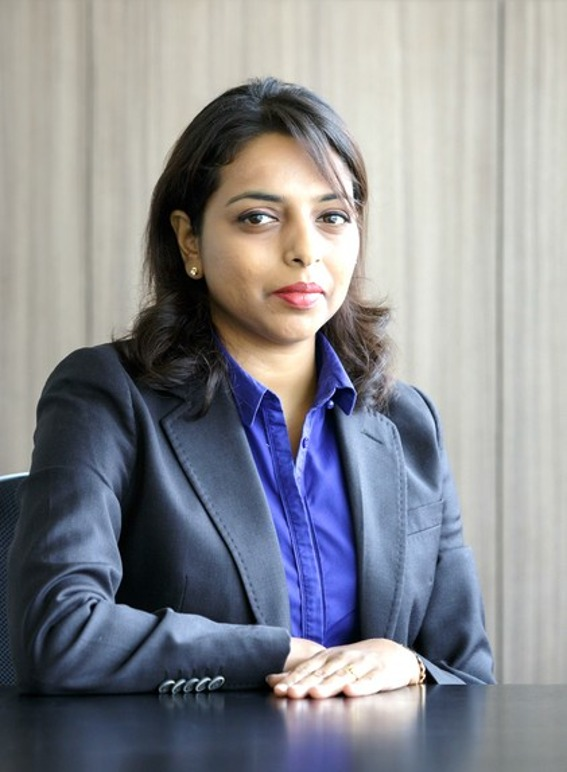
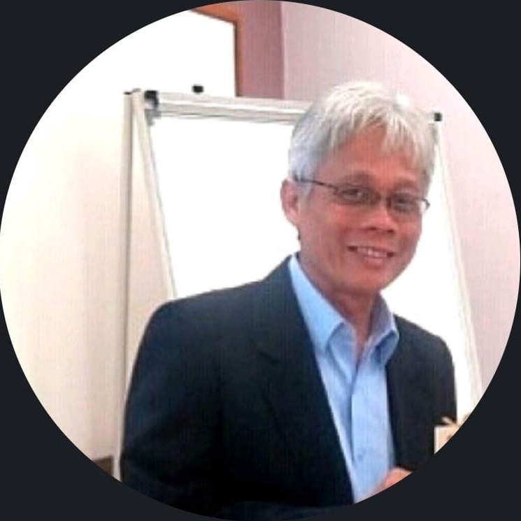

TRAINING • CONSULTING • ORGANISATIONAL DEVELOPMENT
Building capability.
Humanising workplaces.
Delivering measurable results.
Trueway Trainers and Consultants empowers organisations and their people through practical training, strategic consulting and capability-building solutions designed for sustainable performance. We deliver our training and consulting programmes to organisations internationally, as well as in Malaysia, connecting learning, leadership and organisational development with meaningful business outcomes wherever our clients are based.
WHO WE ARE
Developing people.
Transforming organisations.
Exceptional organisations are built by capable people, resilient teams and leaders who are prepared to navigate complexity with confidence.
At Trueway Trainers and Consultants, we believe sustainable success requires more than knowledge transfer. Our approach focuses on building practical capabilities that translate into meaningful and measurable business outcomes.
We provide professional training, coaching and consulting solutions to organisations internationally, as well as in Malaysia, helping businesses strengthen their people, leadership, culture, processes and performance.
Our programmes are designed around real workplace needs, enabling organisations to develop stronger leaders, more capable teams and people-centred workplace cultures, regardless of where they are based.
Trueway Trainers and Consultants is an HRD Corp Accredited Training Provider. For our Malaysian clients, our training programmes are HRD Corp claimable where applicable.
OUR APPROACH
Humanising the Workplace
People are at the heart of every successful organisation. We believe workplaces become stronger when people are understood, valued, developed and empowered.
Our Humanising the Workplace approach brings together people development, emotional intelligence, leadership, communication, teamwork and organisational effectiveness.
We help organisations create workplaces where people can perform at their best while building stronger relationships, healthier workplace cultures and sustainable business results.
People
Developing people through meaningful learning, coaching and continuous capability building.
Leadership
Creating leaders with a mindset of accountability, integrity and strategic leadership equipped with good business acumen and people leadership skills.
Culture
Building inclusive, collaborative and resilient workplace cultures where people can thrive.
Performance
Connecting people development with measurable organisational performance and sustainable results.
WHAT WE DO
Training & Consulting Solutions
Practical learning and consulting solutions designed to strengthen people, organisations and business performance.
Leadership & Management
Developing capable leaders and managers equipped to navigate complexity, lead people and deliver results.
Strategic Management & Leadership · Managerial Skills · Supervisory Skills · Business Acumen for Leaders
People, HR & Workplace
Strengthening people practices, workplace capability and organisational effectiveness through practical human resource and professional development solutions.
Human Resource Management · Handling Misconduct & Industrial Relations · Performance Management · Competency Mapping for Accurate Hiring · Soft Skills
Quality, Process & Productivity
Improving operational effectiveness through structured approaches to quality, process improvement and productivity.
Quality & Process Improvement · Manufacturing Productivity Excellence
Strategy, Problem-Solving & Innovation
Equipping teams with structured thinking and practical tools to solve complex problems, improve decisions and drive innovation.
Strategic Problem-Solving Skills & Tools · Design Thinking Skills
Project & Business Skills
Building the capabilities required to communicate effectively, manage projects and execute business priorities with confidence.
Project Management · Business Communication
Customer Experience
Helping organisations understand and improve the end-to-end customer experience through structured customer journey mapping.
Customer Service Excellence through Customer Journey Mapping
Personal & Professional Development
Supporting individuals in developing the mindset, resilience and interpersonal capabilities required for sustainable professional performance.
Inner Wellness Program for Outer Excellence
Business & Performance Consulting
Consulting projects designed to connect people, processes and business priorities with measurable improvements in organisational and business performance.
Consulting Projects for Business & Performance Excellence
Entrepreneurial Skills, Governance & ESG
Equipping individuals and organisations with the entrepreneurial mindset, governance practices and sustainability awareness needed to build responsible and future-ready businesses.
Entrepreneurial Skills · Corporate Governance · ESG
INTERNATIONAL & MALAYSIA
Building capability across borders.
Trueway Trainers and Consultants works with organisations internationally, as well as in Malaysia, providing practical training, coaching and consulting solutions tailored to different organisational environments and business needs.
Our approach combines extensive industry experience with practical learning methodologies, helping organisations strengthen leadership, develop people, improve processes and create sustainable performance — wherever they are located.
Trueway Trainers and Consultants is an HRD Corp Accredited Training Provider. Malaysian organisations may access HRD Corp claimable training arrangements where applicable.
Discuss Your Training NeedsOUR PEOPLE
Experience that makes a difference.
Our team brings decades of practical experience across business, leadership, governance, quality and organisational development.

CORPORATE COACH • HRD CORP ACCREDITED TRAINER • BUSINESS ANALYST • AUTHOR • LEAN SIX SIGMA BLACK BELT, CQE (ASQ USA) • JUDGED INTERNATIONAL COMPETITIONS • PANELIST
Kalpana Devi Subramaniam
Ms. Kalpana Devi Subramaniam is a highly accomplished corporate coach, trainer, business analyst and consultant with over 25 years of professional experience and more than 22 years of training and consulting experience since 2004.
Her career spans multiple industries including semiconductor manufacturing, retail, service, insurance, banking, universities, government-linked organisations and public-sector engagements.
A highly customer-centric consultant and trainer, Kalpana studies the end-to-end business needs of her clients, enabling her to design practical interventions that turn every engagement into a problem-solving, capability-building and improvement opportunity.
She began her career in the semiconductor industry and progressed to a senior management role. She later accepted an appointment as Project Director to revive a RM50 million annual-revenue insurance scheme, a task she successfully completed within one year.
Equipped with strong analytical and critical-thinking capabilities, Kalpana brings extensive knowledge of people, business and organisational needs to every client engagement, with a focus on achieving practical and sustainable outcomes.
She also lectures degree and postgraduate programmes for adult learners upon invitation from local universities.
Core Expertise
Strategic Management & Leadership · Business Acumen · Leadership Development · Business Analysis · Process & Quality Improvement · Strategic Problem Solving · Performance Management · Human Resource Practices · Business Communication · Organisational Development · Customer Experience · Digital Transformation
Credentials
BSc (Hons) Chemistry — University of Malaya, Malaysia · Lean Six Sigma Black Belt · Certified Business Analyst · Certified Quality Engineer · HRD Corp Accredited Trainer · Author
International Recognition
Judge, International Team Excellence Award — Philadelphia, USA.
Invited by the Government of India as a Scholar for a Government-to-Government initiative representing Malaysia in a six-week programme attended by delegates from 23 countries.
Malaysia Recognition
Awarded Icon of the Community for her dedication and contribution to the community through extensive Corporate Social Responsibility work.
Panelist for university events and discussions.
Authored coffee table books for Malaysian Government Ministries.
Community & Social Impact
For more than 20 years, Kalpana has extensively empowered underprivileged communities as a speaker and mentor.
She has trained more than 1,000 women across Malaysia through entrepreneurial development programmes and has worked with parent groups, secondary school students, orphanages and underprivileged families.
She is also the founding President of MINDSET, an NGO advocating the importance of tertiary education and educational opportunities for the community.
Leadership & Business Impact
Throughout her career, Kalpana has led initiatives focused on improving organisational capability, operational performance, quality, leadership and business outcomes.
Her experience includes leading more than 100 staff in senior management, improving yield loss and lead times, strengthening audit outcomes, enhancing sales competitiveness and supporting organisational transformation.

NON-EXECUTIVE ADVISOR
Mohd Imran Mohd Tahir
A senior corporate governance, internal audit, risk management and integrity professional with over 35 years of experience across diverse industries.
Mohd Imran has extensive industry experience across education, hospitality, healthcare, renewable energy, facilities management, automotive services, trading and distribution, property development, construction, manufacturing, finance, banking, insurance, retail, logistics, warehousing, estate management, plantation and fast-food services.
He has held senior leadership positions including Executive Director at Axcelasia Sdn Bhd, Group Chief Operating Officer at UiTM Holdings, General Manager at KUB (M) Bhd and Naza Group, as well as management positions with DRB-Hicom Bhd and EON Bhd.
During his time with UiTM Holdings, Mohd Imran served on the boards of subsidiary companies and participated in university committees representing the holding company. Much of his professional experience has been in internal auditing and risk management.
Advisory Expertise
Corporate Governance · Internal Audit · Enterprise Risk Management · Integrity & Fraud Prevention · Risk & Compliance · Board & Organisational Advisory
Selected Achievements
Secured Quality Assessment Review certification for internal audit departments of two listed entities in accordance with the International Standards for the Professional Practice of Internal Auditing.
At UiTM Holdings, he led a task force that achieved Malaysian Qualifying Accreditation for three accounting programmes under INTEC College.
Advisory & Consulting
His advisory and consulting experience focuses on governance, internal audit, enterprise risk management, integrity and fraud. Projects have been undertaken for federal government-linked companies and agencies, state government-linked companies, NGOs and public universities in the capacity of a Subject Matter Expert.
LET'S WORK TOGETHER
Ready to build a stronger organisation?
Whether you are based in Malaysia or elsewhere in the world, let's explore how Trueway Trainers and Consultants can support your organisation's people, leadership and performance goals.
Contact Us